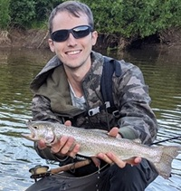

Kyle Coulon
About Me
My name is Kyle Coulon. I grew up in Utah. I currently work as a backend engineer. I enjoy backpacking, fly fishing, and game development. I also love spending time with my wife and son.

Utah, United States of America
Utah is home to the Bonneville cutthroat trout, Oncorhynchus virginalis utah. According to Wikipedia: ..."subspecies of Rocky Mountain Cutthroat Trout native to tributaries of the Great Salt Lake and Sevier Lake. Most of the fish's current and historic range is in Utah, but they are also found in Idaho, Wyoming, and Nevada. This is one of 14 or so recognized subspecies of cutthroat trout native to the western United States."
Wikepedia